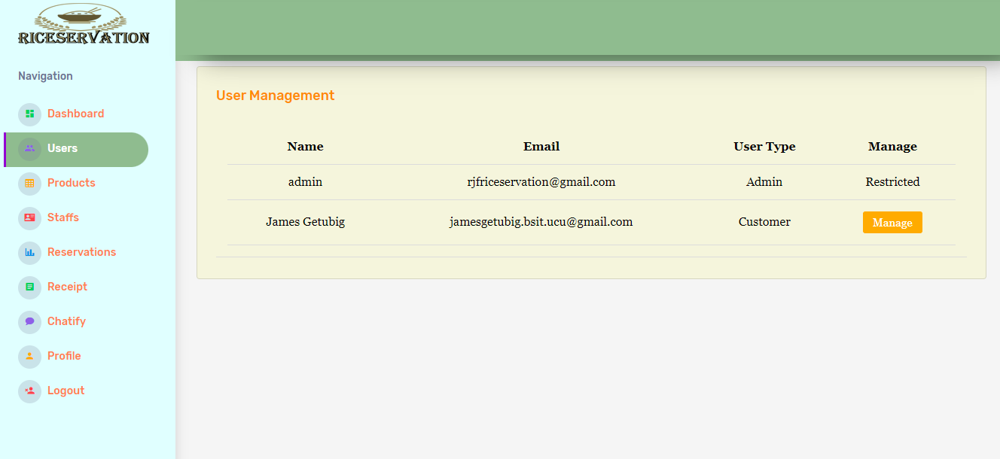
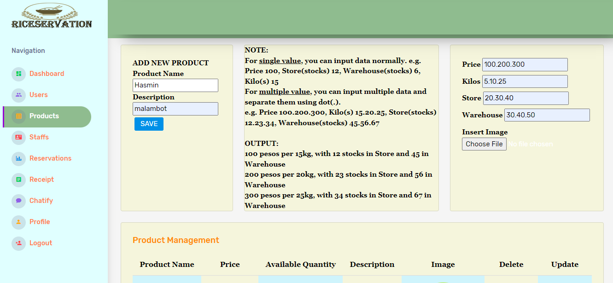
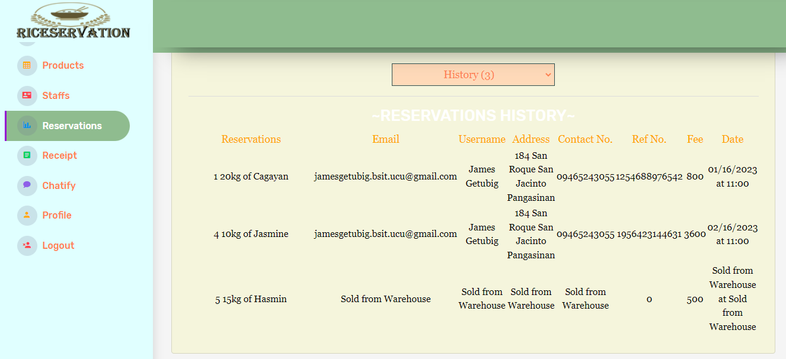

BACKGROUND OF THE STUDY
ECPI(n.d.), claims that the importance of information systems (IS) has risen, and most firms have been urged to implement it to maintain their competitive advantage. Nobody can imagine a firm today without a functional digital information system. The implementation of an information system in a firm can provide several benefits and aid in everyday external and internal procedures as well as future decision-making. A company's decision making process can take a long time and energy without an information system.
The data-driven world has altered how companies connect with their consumers, employees, and competitors. Increased access to information improves internal knowledge and empowers stakeholders to make confident business decisions. Unfortunately, a small business doesn't always know how to leverage its business data to develop insights that can help it grow earnings and attract new consumers (Chirstiansen, L., 2021).
An article authored by Tian, R. (2021) states that The pandemic's constraints drove innovation in the hospitality, healthcare, and retail industries, and online reservation systems have become ubiquitous. As the number of organizations providing this service increases, it will become a requirement for a rising variety of sectors.
STATEMENT OF THE OBJECTIVES
1.To identify the requirements needed in the development of the proposed system along with the areas of: Company and Staff management Profile; Transaction process; and, Reports
2.To identify the design considerations that should be implemented in the development of the proposed study in terms of: architectural framework; content and features; and users of the system.
3.To measure the level of user’s acceptability of the developed/proposed system/application.
FEATURES
USERS
PRODUCTS
RESERVATION
RESERVATION MANAGEMENT

SALE REPORT